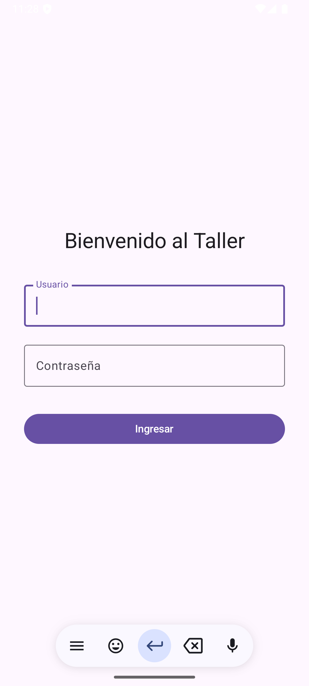
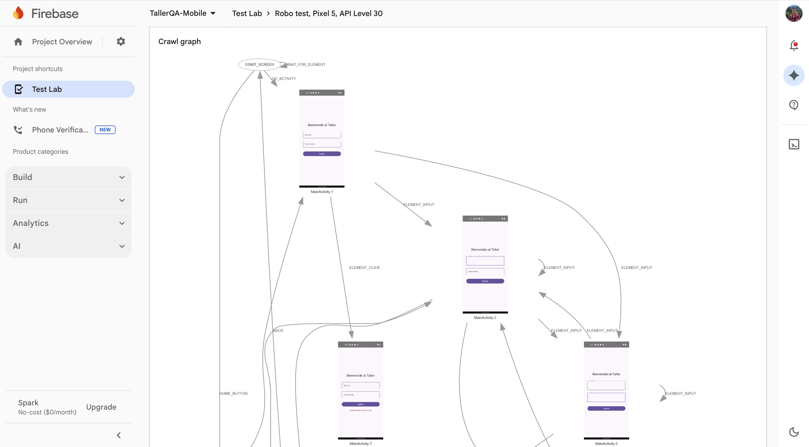
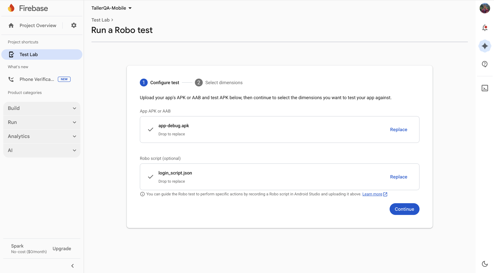
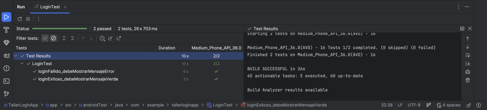
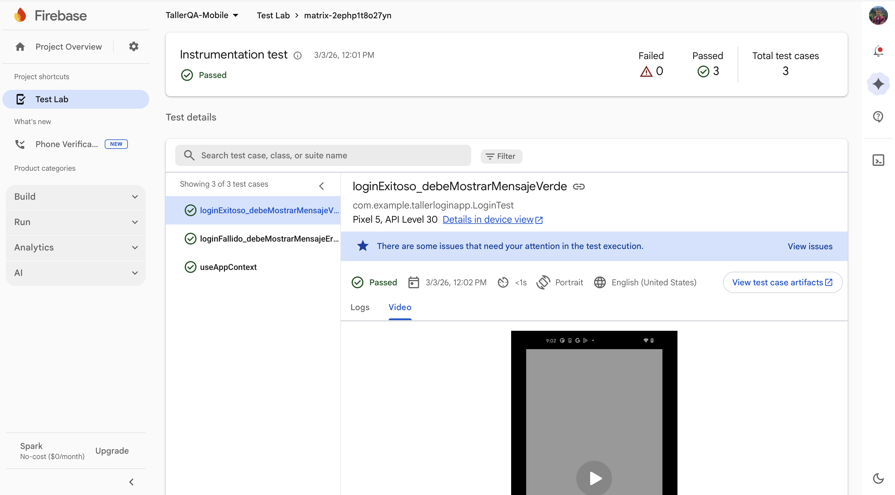
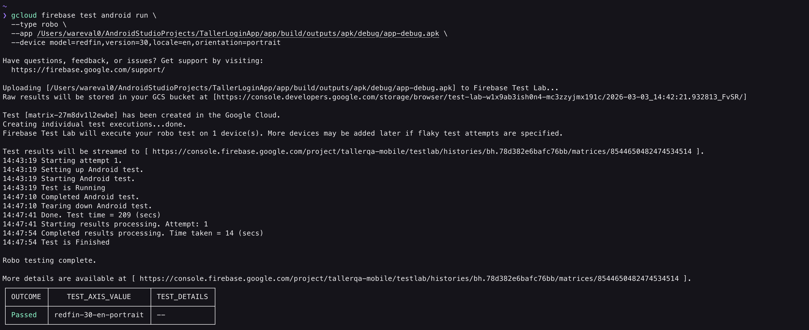

Pasar de la web a mobile es un salto obligatorio para un Engineer SDET (Software Development Engineer in Test) completo.
El ecosistema móvil tiene un desafío que la web no tiene (o tiene menos): La Fragmentación. En web probamos Chrome y tal vez Safari. En Android, tenemos que probar Samsung, Pixel, Xiaomi, Motorola, Android 11, 12, 13, 14, 15... pantallas plegables, tablets, etc.
Aquí entra Firebase Test Lab (FTL): Una granja de dispositivos en la nube de Google.
"En la web, si funciona en Chrome, funciona para el 80% del mundo. En Android, si funciona en tu Pixel, solo has probado el 1% del ecosistema."
Antes de escribir una sola línea de código, debemos entender por qué las pruebas móviles son inherentemente más difíciles que las web.
En el desarrollo web, el navegador abstrae el hardware. En móvil, el software corre directamente sobre el hardware ("bare metal" o a través de la JVM/ART), y ese hardware varía infinitamente.
Las 3 Dimensiones del Caos en Android:
¿Cómo aseguramos la calidad ante tal variedad?
¿Qué es Firebase Test Lab (FTL)?
Es una infraestructura basada en la nube proporcionada por Google que te permite probar tu aplicación en una amplia gama de dispositivos (físicos y virtuales) alojados en sus centros de datos.
Ventajas Clave:
Firebase Test Lab soporta principalmente tres estrategias de testing automatizado:
R.id.boton, en Compose buscaremos por Semántica (hasText("Entrar"), hasTestTag("login_button")).Durante este taller, trabajaremos en dos entornos:
El objetivo de usar Firebase Test Lab no es solo encontrar bugs, es reducir el riesgo de lanzamiento.
Si tu app crashea al abrirse en el teléfono más vendido de tu mercado (ej: Samsung A54), perderás miles de usuarios el día 1. FTL es tu seguro contra ese escenario.
En este módulo, nos pondremos el sombrero de desarrolladores Android. Vamos a construir una aplicación minimalista pero funcional usando Jetpack Compose, el kit de herramientas moderno nativo de Google para construir interfaces de usuario (UI).
A diferencia del viejo sistema de Views (XML), Compose es declarativo (como React o Flutter). Esto cambia la forma en que los elementos se identifican para las pruebas automatizadas.
"Para un QA, el código fuente no debe ser una caja negra. Entender cómo se construye la UI es la mitad de la batalla de la automatización."
Vamos a crear el proyecto desde cero. Asegúrate de tener Android Studio instalado (versión Koala, Ladybug o superior).
TallerLoginAppcom.example.tallerloginapp (Esto es importante, es el ID único de la app).En Compose, no hay archivos XML para la UI. Todo es código Kotlin.
Abre el archivo MainActivity.kt. Vamos a borrar el código de ejemplo y pegar nuestra lógica de Login.
Concepto Clave: Modifier.testTag
En el sistema antiguo, usábamos android:id="@+id/login_btn".
En Compose, aunque podemos buscar por texto (hasText("Login")), esto es mala práctica porque el texto cambia con el idioma.
La mejor práctica es usar Test Tags. Son etiquetas invisibles para el usuario, pero visibles para los frameworks de prueba (Appium, Espresso, Maestro).
Copia y pega este código en tu MainActivity.kt:
package com.example.tallerloginapp
import android.os.Bundle
import androidx.activity.ComponentActivity
import androidx.activity.compose.setContent
import androidx.compose.foundation.layout.*
import androidx.compose.material3.*
import androidx.compose.runtime.*
import androidx.compose.ui.Alignment
import androidx.compose.ui.Modifier
import androidx.compose.ui.platform.testTag
import androidx.compose.ui.unit.dp
class MainActivity : ComponentActivity() {
override fun onCreate(savedInstanceState: Bundle?) {
super.onCreate(savedInstanceState)
setContent {
MaterialTheme {
Surface(modifier = Modifier.fillMaxSize()) {
LoginScreen()
}
}
}
}
}
@Composable
fun LoginScreen() {
// ESTADO: Variables reactivas que guardan lo que escribe el usuario
var username by remember { mutableStateOf("") }
var password by remember { mutableStateOf("") }
var message by remember { mutableStateOf("") }
Column(
modifier = Modifier
.fillMaxSize()
.padding(32.dp),
verticalArrangement = Arrangement.Center,
horizontalAlignment = Alignment.CenterHorizontally
) {
Text(text = "Bienvenido al Taller", style = MaterialTheme.typography.headlineMedium)
Spacer(modifier = Modifier.height(32.dp))
// INPUT USUARIO
OutlinedTextField(
value = username,
onValueChange = { username = it },
label = { Text("Usuario") },
modifier = Modifier
.fillMaxWidth()
.testTag("username_input") // <--- ID para Automation
)
Spacer(modifier = Modifier.height(16.dp))
// INPUT PASSWORD
OutlinedTextField(
value = password,
onValueChange = { password = it },
label = { Text("Contraseña") },
modifier = Modifier
.fillMaxWidth()
.testTag("password_input") // <--- ID para Automation
)
Spacer(modifier = Modifier.height(32.dp))
// BOTÓN LOGIN
Button(
onClick = {
// LÓGICA DE NEGOCIO SIMPLIFICADA
if (username == "admin" && password == "1234") {
message = "Login Exitoso"
} else {
message = "Credenciales Incorrectas"
}
},
modifier = Modifier
.fillMaxWidth()
.testTag("login_button") // <--- ID para Automation
) {
Text("Ingresar")
}
Spacer(modifier = Modifier.height(16.dp))
// MENSAJE DE RESULTADO (Aserción Visual)
if (message.isNotEmpty()) {
Text(
text = message,
color = if (message == "Login Exitoso") MaterialTheme.colorScheme.primary else MaterialTheme.colorScheme.error,
modifier = Modifier.testTag("result_message") // <--- ID para comprobar el resultado
)
}
}
}
Si Android Studio marca testTag en rojo, pon el cursor encima y presiona Alt + Enter para importar. Probablemente necesites agregar la importación manual: import androidx.compose.ui.platform.testTag.
Para probar en la nube (Firebase), no subimos el código fuente, subimos el binario compilado: el APK(Android Package).
Existen dos tipos de APKs que nos interesan:
Cómo compilar desde la Terminal (Integración Continua Style)
Android Studio tiene una pestaña "Terminal" en la parte inferior. Ábrela y ejecuta:
En Windows:
.\gradlew assembleDebug assembleAndroidTest
En Mac/Linux:
./gradlew assembleDebug assembleAndroidTest
Nota: La primera vez descargará medio internet (Gradle Wrapper). Ten paciencia.
Una vez que veas el mensaje BUILD SUCCESSFUL, tus archivos estarán listos. Es vital que sepas dónde están, porque los necesitarás para subirlos a Firebase.
Navega en tu explorador de archivos a la carpeta del proyecto:
TallerLoginApp/app/build/outputs/apk/debug/app-debug.apkTallerLoginApp/app/build/outputs/apk/androidTest/debug/app-debug-androidTest.apkAcabamos de crear una aplicación "Test-Friendly".
Muchos desarrolladores olvidan poner los testTag o contentDescription, haciendo que la vida del QA sea un infierno de XPaths frágiles.
Regla de Oro: Si el componente es interactivo o contiene información clave, debe tener un testTag.
Ya tenemos el artefacto (APK). Ahora, antes de subirlo a la nube, debemos aprender a manipularlo localmente sin tocar la pantalla del emulador.
Para un Ingeniero de Automatización Móvil, el ratón es secundario. La verdadera potencia reside en la terminal.
En este módulo, dominaremos ADB (Android Debug Bridge). Es la herramienta que usan Appium, Maestro y Firebase Test Lab "bajo el capó" para orquestar todo.
"Si no puedes hacerlo por línea de comandos, no puedes automatizarlo."
ADB no es solo un comando; es un sistema de tres partes:
Cuando ejecutas un test en Firebase Test Lab, Google no tiene a una persona tocando la pantalla. Tienen servidores enviando comandos ADB a miles de dispositivos conectados por USB.
ADB viene incluido en el Android SDK Platform-Tools.
adb version.Android Debug Bridge version x.x.x, estás listo.command not found, necesitas agregar la carpeta platform-tools a tu variable de entorno PATH. ~/Library/Android/sdk/platform-toolsC:\Users\TU_USUARIO\AppData\Local\Android\Sdk\platform-toolsVamos a realizar el ciclo de vida de una prueba manual, pero usando solo la terminal. Asegúrate de tener un emulador abierto o un dispositivo físico conectado (con Depuración USB activa).
Paso 1: Reconocimiento (devices)
Verifica quién está conectado.
adb devices
Salida esperada:
List of devices attached
emulator-5554 device
0A3X1J2K device
Si dice unauthorized, revisa la pantalla del teléfono y acepta la huella digital RSA.
Paso 2: Instalación Limpia (install)
Vamos a instalar la app que compilamos en la sección anterior.
Navega a la carpeta donde está tu APK (o copia la ruta completa).
# -r: Reinstalar si ya existe (guarda datos)
# -g: Conceder todos los permisos runtime (cámara, ubicación, etc.) automáticamente
adb install -r -g app-debug.apk
Salida: Success
Paso 3: Ejecución (
shell am
)
Vamos a lanzar la App. Aquí usamos el Activity Manager (am).
Necesitamos saber el Package Name (com.example.tallerloginapp) y la Activity principal (.MainActivity).
# -n: Define el componente (Paquete / Actividad)
adb shell am start -n com.example.tallerloginapp/.MainActivity
Resultado: La app debería abrirse mágicamente en el emulador.

Paso 4: Interacción Fantasma (
shell input
)
Aquí es donde simulamos al usuario. Vamos a intentar loguearnos.
Nota: Estos comandos son "ciegos", asumen que la app está en el estado correcto.
# 1. Escribir texto (asume que el foco está en el primer campo, o usa TAB para navegar)
# Tip: En Compose, a veces necesitas tocar el campo primero.
# Simulamos un TAP en coordenadas X,Y (ajusta según tu pantalla, ej: centro de pantalla)
# O mejor, usamos TABs para navegar accesibilidad.
# Enviamos TAB (Keycode 61) para mover el foco al campo Usuario
adb shell input keyevent 61
# Escribimos
adb shell input text "admin"
# TAB al campo Password
adb shell input keyevent 61
# Escribimos
adb shell input text "1234"
# TAB al botón Login
adb shell input keyevent 61
# ENTER (Keycode 66) para presionar
adb shell input keyevent 66
Reto de Hacker: Si input text falla porque no hay foco, puedes usar adb shell input tap 500 800 (coordenadas X Y aproximadas del campo). ¡Descubre las coordenadas activando "Pointer Location" en las opciones de desarrollador del teléfono!
Si la app crashea, ¿dónde está el error? En el Logcat.
Es un río de información constante. Vamos a filtrarlo.
# Limpiar el buffer antiguo
adb logcat -c
# Escuchar logs, filtrando solo errores (E) de nuestra app
# En Windows usa 'findstr', en Mac/Linux usa 'grep'
adb logcat "*:E" | grep "com.example.tallerloginapp"
Si la app falla o se lanza un error, verás los logs aparecer en tiempo real en tu terminal. Presiona Ctrl + C para detener.
Un QA necesita pruebas.
Captura de Pantalla:
# 1. Tomar foto y guardarla EN EL TELÉFONO (/sdcard)
adb shell screencap -p /sdcard/evidencia.png
# 2. Traer la foto A TU COMPUTADORA
adb pull /sdcard/evidencia.png ./mi_escritorio/
Grabar Video:
adb shell screenrecord /sdcard/demo.mp4
# (Haz cosas en el emulador por 5 segundos...)
# Presiona Ctrl+C en la terminal para detener grabación
adb pull /sdcard/demo.mp4 .
Lo que acabas de hacer manualmente (install -> start -> input -> logcat) es exactamente lo que hace Firebase Test Lab automáticamente cuando le envías un "Robo Test".
Entender ADB te permite depurar cuando la nube falla. Si FTL dice "Device setup failed", sabrás que probablemente falló el comando adb install por una incompatibilidad de arquitecturas (x86 vs ARM) o versiones de API.
Ya dominamos la terminal. Ahora vamos a llevar nuestra aplicación a la nube.
En este módulo, descubriremos cómo Google puede probar nuestra aplicación automáticamente sin que nosotros escribamos una sola línea de código de prueba... aunque con una pequeña ayuda nuestra para superar el Login.
"La automatización sin código es posible, pero la automatización sin inteligencia es inútil."
Imagina que le das tu teléfono a un niño muy curioso y muy rápido. Tocará todo, girará la pantalla, cambiará el idioma y tratará de romper la app. Eso es un Robo Test.
¿Cómo funciona?
El "Robo" analiza la jerarquía de vistas de tu aplicación (UI Hierarchy) en tiempo real. Identifica elementos interactivos (botones, campos de texto) y ejecuta acciones sobre ellos usando una exploración DFS (Depth-First Search) y aleatoria.
Lo que detecta automáticamente:
El Problema del Login:
El Robo es inteligente, pero no es adivino. Si llega a nuestra LoginScreen, verá dos campos de texto. Probablemente escriba "Hello" en el usuario y "World" en el password. Como nuestra app requiere "admin" y "1234", el Robo nunca pasará de la primera pantalla. Aquí es donde entra el Robo Script.
Vamos a ver al Robo fallar (o quedarse atascado) para entender la necesidad del script.
Paso 1: Configurar Firebase Console
Paso 2: Subida Manual (La Prueba Ciega)
app-debug.apk que generamos en el Módulo 1 (Carpeta: app/build/outputs/apk/debug/).Paso 3: Análisis de Resultados
La prueba tardará unos 2-5 minutos (Google está aprovisionando un teléfono físico real o virtual para ti).

Para guiar al robot, usamos un archivo JSON llamado robo.script. Es una lista de instrucciones secuenciales que el robot ejecuta antes de volverse loco aleatoriamente.
Dado que usamos Jetpack Compose, la identificación de elementos es sutilmente diferente a XML. El Robo se basa mucho en la Accesibilidad (Content Description) o en el texto visible.
Paso 4: Creación del Guion (JSON Manual)
Aunque Android Studio tiene herramientas de grabación, a veces fallan con Compose. Vamos a escribir el script manualmente como verdaderos ingenieros.
Crea un archivo llamado login_script.json en tu carpeta del proyecto y pega lo siguiente:
[
{
"eventType": "VIEW_TEXT_CHANGED",
"timestamp": 1000,
"replacementText": "admin",
"elementDescriptors": [
{
"className": "android.widget.EditText",
"groupViewId": 0,
"resourceId": "",
"contentDescription": "",
"text": "Usuario"
}
]
},
{
"eventType": "VIEW_TEXT_CHANGED",
"timestamp": 2000,
"replacementText": "1234",
"elementDescriptors": [
{
"className": "android.widget.EditText",
"groupViewId": 0,
"resourceId": "",
"contentDescription": "",
"text": "Contraseña"
}
]
},
{
"eventType": "VIEW_CLICKED",
"timestamp": 3000,
"elementDescriptors": [
{
"className": "android.widget.Button",
"text": "Ingresar"
}
]
}
]
Análisis del JSON:
"text": "Usuario" y "text": "Ingresar". OutlinedTextField exponen su label como texto al servicio de accesibilidad. El Robo usa esto para encontrar el campo.Modifier.semantics { contentDescription = "desc" }, usaríamos el campo "contentDescription" en el JSON, lo cual es más robusto multi-idioma.VIEW_TEXT_CHANGED: Escribir texto.VIEW_CLICKED: Tocar.Volvamos a Firebase Console.
app-debug.apk.login_script.json.
Espera los resultados.
Los Robo Scripts son una herramienta de "bajo costo, alto impacto".
No reemplazan a Espresso/Appium para pruebas de regresión complejas, pero son perfectos para Smoke Tests rápidos.
Escenario Real: Configuras un Robo Test diario en Jenkins. Si un desarrollador rompe el Login o la app crashea al abrirse, el Robo te avisará antes que cualquier usuario, y solo te costó un archivo JSON de 20 líneas.
Ya sabemos cómo probar nuestra app sin escribir código (Robo Tests) y cómo "engañar" al robot para que pase el login (Robo Scripts).
Ahora, nos vamos a poner serios. Un Ingeniero SDET no confía en la suerte de un robot aleatorio. Escribe pruebas deterministas y reproducibles.
En este módulo, aprenderemos a escribir Pruebas Instrumentadas con Jetpack Compose Test Rules. Estas pruebas corren dentro del dispositivo, interactuando directamente con la UI a la velocidad de la luz.
"Un Robo Test te dice si la app crashea. Un Instrumentation Test te dice si la app funciona."
A diferencia de una prueba unitaria (JUnit) que corre en la JVM de tu computadora y es rapidísima pero aislada, una prueba instrumentada corre en el dispositivo Android (físico o emulado).
La Magia de la Instrumentación:
El sistema Android instala dos APKs:
com.example.tallerloginapp).com.example.tallerloginapp.test) que inyecta comandos en el proceso de la App principal.Esto permite que tu código de prueba diga: "Oye, App, presiona ese botón ahora" o "Dime qué texto tiene ese campo".
Vamos a volver a Android Studio.
Abre el archivo build.gradle.kts (Module :app).
Asegúrate de tener las dependencias de testing para Compose. Deberían estar ahí por defecto si creaste el proyecto con la plantilla "Empty Activity", pero verifiquémoslo:
dependencies {
// ... otras dependencias ...
// Regla de Test para JUnit 4 (Esencial)
androidTestImplementation(libs.androidx.compose.ui.test.junit4)
// Herramientas de depuración (Manifest, etc.)
debugImplementation(libs.androidx.compose.ui.test.manifest)
}
Nota: Si usas libs.versions.toml (Catálogo de versiones), verifica que existan. Si no, agrégalas manualmente:
androidTestImplementation("androidx.compose.ui:ui-test-junit4:1.6.8")
debugImplementation("androidx.compose.ui:ui-test-manifest:1.6.8")
Sincroniza el proyecto (Sync Now).
LoginTest.kt)En el explorador de proyectos (izquierda), busca la carpeta app/src/androidTest/java/com/example/tallerloginapp/.
(Ojo: No confundir con test/java que es para unit tests).
Crea un nuevo archivo Kotlin llamado LoginTest.kt.
El Escenario de Prueba:
Copia y pega este código:
package com.example.tallerloginapp
import androidx.compose.ui.test.*
import androidx.compose.ui.test.junit4.createComposeRule
import androidx.test.ext.junit.runners.AndroidJUnit4
import org.junit.Rule
import org.junit.Test
import org.junit.runner.RunWith
@RunWith(AndroidJUnit4::class)
class LoginTest {
// 1. REGLA DE COMPOSE: Inicia la UI antes de cada test
@get:Rule
val composeTestRule = createComposeRule()
@Test
fun loginExitoso_debeMostrarMensajeVerde() {
// 2. SETUP: Cargamos la pantalla
composeTestRule.setContent {
LoginScreen()
}
// 3. INTERACCIÓN (Act)
// Usamos los testTags que definimos en el Módulo 1.
// onNodeWithTag busca en el árbol semántico.
composeTestRule.onNodeWithTag("username_input")
.performTextInput("admin")
composeTestRule.onNodeWithTag("password_input")
.performTextInput("1234")
composeTestRule.onNodeWithTag("login_button")
.performClick()
// 4. ASERCIÓN (Assert)
// Esperamos que aparezca el nodo con el mensaje y verificamos su texto.
composeTestRule.onNodeWithTag("result_message")
.assertIsDisplayed()
.assertTextEquals("Login Exitoso")
}
@Test
fun loginFallido_debeMostrarMensajeError() {
composeTestRule.setContent { LoginScreen() }
composeTestRule.onNodeWithTag("username_input").performTextInput("hacker")
composeTestRule.onNodeWithTag("password_input").performTextInput("password")
composeTestRule.onNodeWithTag("login_button").performClick()
composeTestRule.onNodeWithTag("result_message")
.assertIsDisplayed()
.assertTextEquals("Credenciales Incorrectas")
}
}
Antes de subir a la nube, probemos que funciona en tu máquina.
LoginTest.kt, verás unos iconos de "Play" verdes al lado de la clase y de cada función @Test.class LoginTest para correr ambos tests.Resultado Esperado:

Ahora viene la parte clave para Firebase. Necesitamos empaquetar estos tests en un APK.
Abre la terminal de Android Studio y ejecuta nuevamente:
Windows:
.\gradlew assembleDebug assembleAndroidTest
Mac/Linux:
./gradlew assembleDebug assembleAndroidTest
Esto actualizará los archivos .apk en app/build/outputs/apk/.
app-debug.apk: La app (actualizada).app-debug-androidTest.apk: Los tests que acabamos de escribir.Vamos a subir estos APKs manualmente para ver la diferencia con el Robo Test.
debug/app-debug.apk.androidTest/debug/app-debug-androidTest.apk.Cuando termine (2-3 minutos):
loginExitoso, loginFallido).
Acabas de realizar una prueba de Caja Blanca en la nube.
A diferencia del Robo Test que adivina, aquí tú tienes el control total.
Ventaja: Si el test falla, sabes exactamente qué paso falló (ej: "No apareció el mensaje de éxito").
Desventaja: Tienes que mantener el código del test. Si cambias el testTag en la app, el test se rompe.
Ya hemos validado que nuestros tests funcionan en la nube. Pero seamos honestos: hacer clic en botones en una página web no es escalable. Si tienes que correr esto cada vez que un desarrollador hace un git push, necesitas automatización pura.
En este módulo, dejaremos el mouse de lado. Entraremos al territorio de DevOps. Aprenderemos a controlar la granja de dispositivos de Google directamente desde nuestra terminal usando el Google Cloud CLI (gcloud).
"Las GUIs son para turistas. La CLI es para residentes."
¿Por qué aprender comandos crípticos si la consola web es bonita?
Porque Jenkins, GitHub Actions y GitLab CI no tienen manos.
Para integrar pruebas móviles en un pipeline de despliegue, necesitamos una herramienta que pueda:
Esa herramienta es gcloud CLI, el kit de desarrollo oficial de Google Cloud Platform. Dado que Firebase es parte de GCP, esta es la llave maestra.
Si ya tienes instalado el SDK de Google Cloud, puedes saltar al paso de Login. Si no, es momento de instalarlo.
Paso 1: Instalación
brew install --cask google-cloud-sdkecho "deb [signed-by=/usr/share/keyrings/cloud.google.gpg] https://packages.cloud.google.com/apt cloud-sdk main" | sudo tee -a /etc/apt/sources.list.d/google-cloud-sdk.list
curl https://packages.cloud.google.com/apt/doc/apt-key.gpg | sudo apt-key --keyring /usr/share/keyrings/cloud.google.gpg add -
sudo apt-get update && sudo apt-get install google-cloud-sdk
Paso 2: Autenticación (auth login)
Una vez instalado, abre tu terminal y ejecuta:
gcloud auth login
Esto abrirá tu navegador. Inicia sesión con la misma cuenta de Gmail que usaste para crear el proyecto en Firebase.
Paso 3: Selección del Proyecto (
config set
)
Debemos decirle a la CLI con qué proyecto queremos trabajar. Necesitas el Project ID (no el nombre bonito).
tallerqa-mobile-12345).Ejecuta en la terminal:
gcloud config set project TU_PROJECT_ID
models list)Antes de lanzar una prueba, necesitamos saber qué dispositivos están disponibles. No puedes pedir un "iPhone 17" si Google no lo tiene.
Ejecuta:
gcloud firebase test android models list
Salida esperada:
Verás una tabla gigante con columnas: MODEL_ID, MAKE, MODEL_NAME, FORM, RESOLUTION, OS_VERSION_IDS.
Tip: Anota el MODEL_ID (ej Pixel 5: redfin) y una versión de API compatible (ej: 30). Los usaremos en el comando de ejecución.
Vamos a replicar lo que hicimos en una sección anterior, pero como pros.
Asegúrate de estar en la carpeta raíz de tu proyecto Android donde tienes los APKs.
Construyamos el comando:
gcloud firebase test android run: El comando base.-type robo: Tipo de prueba.-app app-debug.apk: La ruta a tu APK (ajusta la ruta si es necesario).-device model=redfin,version=30,locale=en,orientation=portrait: La especificación del hardware.Ejecuta:
# Ajusta la ruta al APK según donde estés parado
gcloud firebase test android run \
--type robo \
--app app/build/outputs/apk/debug/app-debug.apk \
--device model=redfin,version=30,locale=en,orientation=portrait
Lo que verás:
Uploading [app-debug.apk] to Firebase Test Lab...Raw results will be stored in your GCS bucket at [gs://...]Test [matrix-1234] has been created in the Google Cloud.
Aquí es donde la nube brilla. Vamos a ejecutar nuestros tests de Espresso en dos dispositivos diferentes al mismo tiempo. Esto se llama Test Matrix.
Vamos a pedir:
Ejecuta este comando maestro:
gcloud firebase test android run \
--type instrumentation \
--app app/build/outputs/apk/debug/app-debug.apk \
--test app/build/outputs/apk/androidTest/debug/app-debug-androidTest.apk \
--device model=redfin,version=30,locale=en,orientation=portrait \
--device model=Pixel2.arm,version=29,locale=es,orientation=landscape \
--timeout 90s
Análisis del Comando:
-type instrumentation: Ahora usamos nuestros tests de Espresso.-test: Añadimos el APK de pruebas.-device: Repetimos la bandera dos veces. Esto le dice a FTL: "Crea una matriz con estos dos entornos".-timeout 90s: Si el test se cuelga, mátalo al minuto y medio (ahorra dinero).Al finalizar, verás una tabla resumen en tu terminal:
More details are available at [ https://console.firebase.google.com/project/....
┌─────────┬────────────────────────────┬─────────────────────┐
│ OUTCOME │ TEST_AXIS_VALUE │ TEST_DETAILS │
├─────────┼────────────────────────────┼─────────────────────┤
│ Passed │ Pixel2.arm-29-es-landscape │ 3 test cases passed │
│ Passed │ redfin-30-en-portrait │ 3 test cases passed │
└─────────┴────────────────────────────┴─────────────────────┘
Si ves Passed en ambas filas, acabas de verificar compatibilidad cruzada (Cross-Compatibility) en segundos.
https://console.firebase... te lleva al reporte web con los videos y logs detallados que vimos en los módulos anteriores.gs://... te lleva al Google Cloud Storage donde están los archivos crudos (XML de JUnit, Logcat) listos para ser parseados por Jenkins o SonarQube.Este comando es el que pondrías en un archivo .yml de GitHub Actions.
Automatizar la ejecución de pruebas permite detectar regresiones (bugs introducidos por código nuevo) antes de que lleguen a QA manual.
Costo: Ojo con la matriz. Si pides 10 dispositivos y tu test dura 5 minutos, consumirás 50 minutos de tu cuota de Firebase. Usa dispositivos virtuales para desarrollo y físicos solo para Release Candidates.
Hasta ahora, te hemos llevado de la mano: creamos la app, escribimos los tests y configuramos la nube. Pero en el mundo real, los bugs no son tan obvios como un botón que dice "Login". Los bugs reales se esconden en la rotación de pantalla, en versiones antiguas de Android y en flujos de usuario específicos.
En esta sección, te enfrentarás a dos desafíos diseñados para simular situaciones de crisis en un equipo de QA Mobile.
Regla de Oro: Intenta resolver los desafíos por tu cuenta antes de mirar las soluciones. El aprendizaje real ocurre cuando ves un reporte de error en rojo y tienes que averiguar por qué.
Contexto del Negocio:
Un desarrollador Junior acaba de subir un cambio. Dice que arregló un bug, pero sospechamos que introdujo un "Easter Egg" que hace crashear la aplicación bajo condiciones específicas. Tu trabajo es encontrar ese crash usando la nube.
Preparación (El Sabotaje):
Vas a introducir un bug intencional en tu MainActivity.kt.
Modifica el comportamiento del botón de Login para que lance una excepción si el usuario escribe "crash".
// En MainActivity.kt, dentro del onClick del Button:
Button(
onClick = {
if (username == "crash") {
throw RuntimeException("¡Boom! La app explotó por un bug crítico.")
}
// ... resto de tu lógica (admin/1234) ...
},
// ... modifiers ...
)
Compila de nuevo el APK (gradlew assembleDebug).
Tu Misión:
Configura una prueba en Firebase Test Lab que detecte este crash automáticamente.
bug_trigger.json) que obligue al robot a escribir "crash" en el campo de usuario y presionar el botón.Criterio de Éxito:
ava.lang.RuntimeException: ¡Boom! La app explotó....Contexto del Negocio:
El equipo de marketing quiere lanzar la app en mercados emergentes. Nos preocupa que la interfaz (UI) se rompa en teléfonos con pantallas pequeñas y baja resolución.
No tenemos presupuesto para comprar estos teléfonos viejos.
Tu Misión:
Usa la gcloud CLI para ejecutar tu prueba de Espresso (LoginTest.kt) simultáneamente en 3 escenarios muy distintos:
Redmi 6A).Requerimientos:
--timeout para evitar costos excesivos.Criterio de Éxito:
Desafío 1 (Robo Script del Crash)
Debes crear un archivo bug_trigger.json similar a este. Nota que el replacementText es la clave.
[
{
"eventType": "VIEW_TEXT_CHANGED",
"timestamp": 1000,
"replacementText": "crash",
"elementDescriptors": [
{
"className": "android.widget.EditText",
"groupViewId": 0,
"resourceId": "",
"contentDescription": "",
"text": "Usuario"
}
]
},
{
"eventType": "VIEW_CLICKED",
"timestamp": 3000,
"elementDescriptors": [
{
"className": "android.widget.Button",
"text": "Ingresar"
}
]
}
]
Sube este archivo en la sección "Robo directives" de Firebase Console al lanzar el test.
Desafío 2 (Comando gcloud Matrix)
Primero, usa gcloud firebase test android models list para obtener los IDs correctos. Asumiendo que existen, el comando sería:
gcloud firebase test android run \
--type instrumentation \
--app app/build/outputs/apk/debug/app-debug.apk \
--test app/build/outputs/apk/androidTest/debug/app-debug-androidTest.apk \
--device model=rango,version=36,locale=en,orientation=portrait \
--device model=AndroidTablet270dpi.arm,version=30,locale=en,orientation=landscape \
--device model=cactus,version=27,locale=es,orientation=portrait \
--timeout 3m
Nota: Es posible que
Pixel 10 Pro Fold
no esté disponible gratis. Ajusta los modelos según la lista disponible.
Este taller ha sido diseñado para proporcionar una base sólida en la automatización profesional, alineada con las mejores prácticas de la industria actual.
Autor: Wilmer Arévalo
Rol: Profesional en Proyectos de Investigación
Departamento: Centro de Investigación, Facultad de Ingeniería, Universidad de los Andes
Fecha de creación/actualización: Marzo de 2026
Todo el contenido de este taller está basado en la documentación oficial más reciente:
Si tienen dudas al implementar esto en sus proyectos reales o encuentran problemas con la configuración: